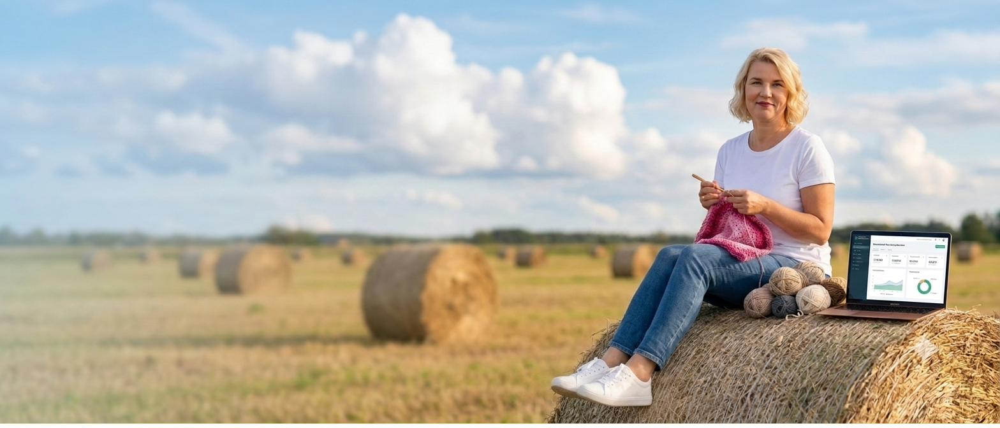
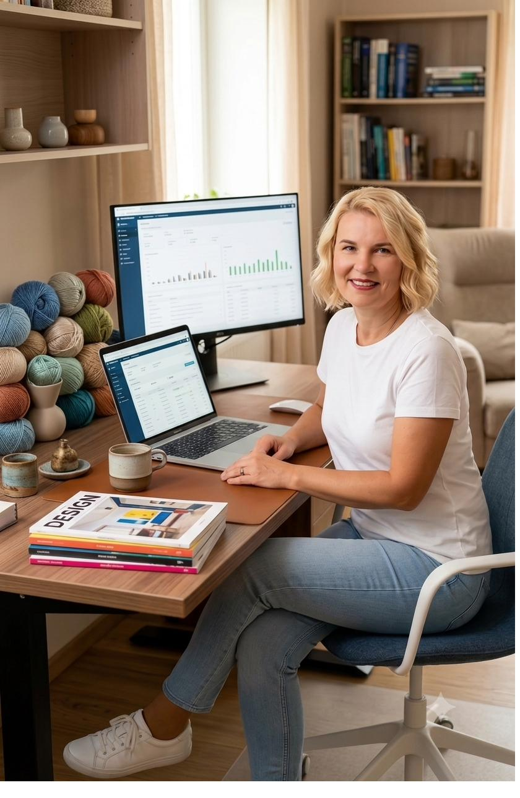

Pakun kaasaegset paberivaba raamatupidamist ning olen Sulle partneriks veebilahenduste loomisel ja sotsiaalmeedias.

Tere! Mina olen Eve.
Ma tean täpselt, miks Sa oma ettevõtte lõid. Sa tahtsid luua midagi oma kätega - teha ainulaadset käsitööd, pakkuda loovaid teenuseid ja olla iseenda peremees. Sa ei alustanud äri selleks, et veeta õhtuid Exceli tabelites, muretseda deklaratsioonide pärast või murda pead selle üle, miks pangakontol on kuu lõpus vähem raha kui lootsid.
Minu taust ühendab kaks maailma - selged finantsteadmised ja ehtsa loometöö kogemuse:
Unusta kantseliit ja keerulised tabelid. Mina tegelen raamatupidamise, hinnastamise ja süsteemidega, et Sina saaksid keskenduda sellele, mida armastad - oma loomingule.Teeme ühe virtuaalse kohvi ja vaatame, kuidas saan Su elu kergemaks ja ettevõtte kasumlikumaks teha!
Kui vähemalt kaks neist punktidest pani Sind noogutama, pole viga Sinus, vaid selles, et teed asju, mis pole Su päris töö.
Sa ei pea kõike üksinda tegema, võta oma aeg tagasi.
Broneeri tasuta 15-minutiline vestlusKui mõni neist kõlab tuttavalt, oled õiges kohas.
Hea raamatupidamine ei tähenda ainult korras dokumente. See tähendab, et Sul on igal hetkel selge ülevaade oma ettevõttest, usaldusväärne partner oluliste otsuste tegemisel ja kindlus, et finantsid toetavad kasvu. Toetan Sind lahendustega, mis kohanduvad Sinu ettevõtte suuruse, töökorralduse ja eesmärkidega.
Pangandus, finantsjuhtimine, äriarendus ja ettevõtlus annab laiapõhjalise vaate sellele, kuidas ettevõtted päriselt toimivad.
Aitan mõista ettevõtte finantsseisu, korrastada tööprotsesse ja luua süsteeme, mis toetavad kasvu.
Kasutan kaasaegseid digitaalseid tööriistu ja automatiseerimist seal, kus need loovad päriselt väärtust.
Ma ei ole lihtsalt teenusepakkuja. Olen partner, kelle poole saad pöörduda ka siis, kui ettevõte kasvab ja vajadused muutuvad.
Sobib eriti hästi loomeettevõtjatele, teenusettevõtetele ja mikroettevõtetele, kes hindavad personaalset koostööd.
Kui finantsid, tööprotsessid ja aruandlus toimivad, saad teha paremaid otsuseid ja tegutseda kindlamalt.
Otsid partnerit, mitte ainult raamatupidajat? Kui soovid koostööpartnerit, kes mõtleb Sinuga kaasa ja aitab luua tugeva aluse ettevõtte kasvuks, võtame ühendust.
Lepime konsultatsiooniaja kokkuÕpin tundma kõigepealt Sinu ettevõtet, töökorraldust ja eesmärke. Ühiselt leiame lahenduse, mis toetab just Sinu ettevõtte arengut.
Räägime läbi Sinu ettevõtte tänase olukorra, ootused ja väljakutsed ning arutame, millist tuge vajad.
Vaatame üle olemasolevad protsessid, süsteemid ja töökorralduse ning teeme ettepanekud, kuidas tööd lihtsamaks muuta.
Koostame sobiva teenuslahenduse ja lepime kokku töökorralduse, infovahetuse ja vastutusalad.
Raamatupidamine ja aruandlus liiguvad õigeaegselt ja süsteemselt. Sina keskendus oma loomingule ja ettevõtte juhtimisele.
Olen partneriks ka siis, kui vajad nõu, soovid protsesse arendada või teha olulisi äriotsuseid.
Illustraator, kunstnik, keraamik, sisulooja, moedisainer, koolitaja iga looja äri ja ettevõtmine on ainulaadne. Just seetõttu ei saa üks standardne hinnakiri sobida kõigile.
Seepärast lepime kokku fikseeritud kuutasu, mis lähtub sinu ettevõtte tegelikust mahust ja sellest, kui palju tuge sa soovid.
Sa ei maksa selle eest, mida sa ei kasuta. Väike dokumendimaht, aga suur nõustamisvajadus? Või vastupidi? Hind peegeldab sinu ettevõtte tegelikku olukorda.
Loomevaldkonnas sissetulek kõigub. Fikseeritud kuutasu tähendab, et tead oma püsikulu ka kõige tihedamal kuul. Aktiivsem hooaeg ei too kaasa suuremat arvet.
Kui avad rahvusvahelise e-poe või palkad esimese töötaja, vaatame kokkuleppe üle ja kohandame seda. Uus vajadus, uus kokkulepe.
Kokkuleppe mõte on lihtne: sina tegeled loominguga, mina paberitega.
Ei arveldata minutite kaupa. Üksik küsimus ei ole eraldi teenus — see kuulub koostöö juurde. Ja kui ettevõtte maht märgatavalt muutub, räägime sellest enne, mitte arvel.
"Lõpuks keegi, kes asja mõistab. Numbrid on korras ja saan otsuseid teha kindlalt."
"Selgitab keerulisi asju lihtsalt ja hoiab tähtaegadest kinni. Tunnen end oma ettevõtte numbrite osas rahulikult."
"Mõtleb kaasa ja annab nõu — teeb oma tööd südamega. Kliendina tunneme end väga hoituna."
Jah. Raamatupidaja vahetamine ei pea olema keeruline. Korraldame ülemineku sujuvalt, suhtleme vajadusel eelmise raamatupidajaga ning hoolitseme selle eest, et vajalikud andmed jõuaksid korrektselt üle.
Ei. Meie klientide seas on nii loomeettevõtjaid, teenusettevõtteid kui ka teisi väike- ja keskmise suurusega ettevõtteid. Loomeettevõtjatele oleme loonud eraldi lähenemise, sest mõistame hästi nende töö eripära.
Töötame kaasaegsete pilvepõhiste lahendustega, peamiselt Merit Aktivaga. Vajadusel seadistame süsteemi ning nõustame selle kasutamisel.
See sõltub ettevõtte olukorrast, kuid enamasti saame koostööga alustada mõne tööpäeva jooksul. Kui vajad kiiret abi, leiame võimalusel lahenduse ka lühema tähtajaga.
Jah. Peame oluliseks avatud suhtlust ja seda, et klient ei peaks keeruliste küsimustega üksi jääma. Oleme olemas ka igapäevaste finants- ja ettevõtlusküsimuste korral.
Hind sõltub ettevõtte tegevusmahust, dokumentide hulgast ning sellest, milliseid teenuseid vajad. Enne koostöö algust lepime kokku läbipaistva hinnastamise, et teaksid täpselt, millega arvestada.
Kui otsid partnerit, kes aitab hoida ettevõtte finantsid korras ja toetab selle arengut, alustame tutvumisest. Kirjuta või helista ning võtame Sinuga ühendust esimesel võimalusel.